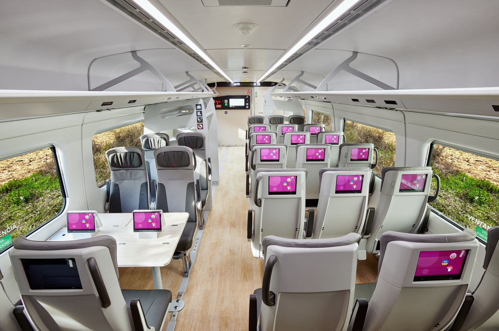
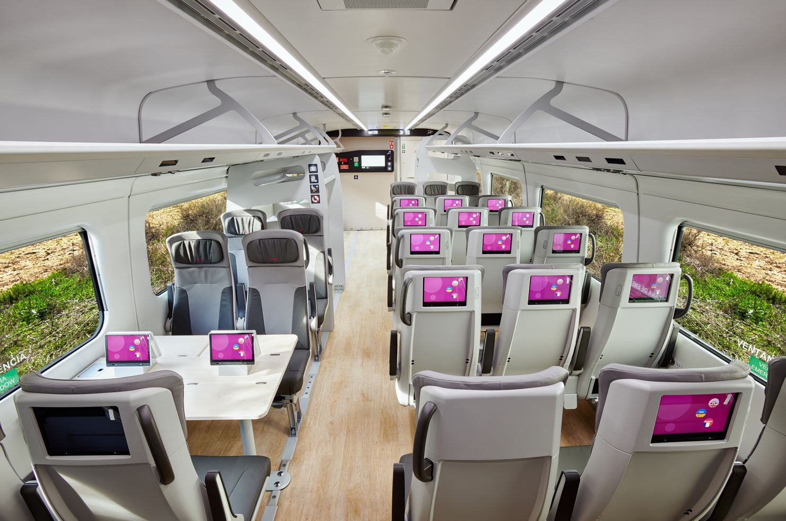

Talgo Avril
Испанският високоскоростен влак, проектиран за ефективност и комфорт.

 

Преглед
Talgo Avril е един от най-модерните високоскоростни влакове, проектиран да осигури бързина и комфорт на пътниците. Този влак се характеризира със своята иновационна конструкция, която позволява висока стабилност и ефективност на движение.
Основни характеристики
- Скорост: Максимална скорост до 330 км/ч
- Енергийна ефективност: Използва новаторски технологии за намаляване на консумацията на енергия
- Устойчивост: Създаден с акцент върху екологичната устойчивост
- Комфорт: Просторни и модерни интериори с подобрени седалки
Технология
Talgo Avril е оборудван с авангардни технологии за контрол на движението и безопасност. Тези технологии включват автоматични спирачни системи и иновации, които подобряват комфорта на пътуващите и намаляват шума.
Услуги на борда
На борда на Talgo Avril се предлагат разнообразни удобства, включително Wi-Fi, удобни седалки, кафене и услуги за обслужване на пътници, осигуряващи приятно и комфортно пътуване.
Спецификации
| Скорост | 330 км/ч |
|---|---|
| Дължина | 200 метра |
| Капацитет | 400 пасажери |
| Оператор | Renfe |